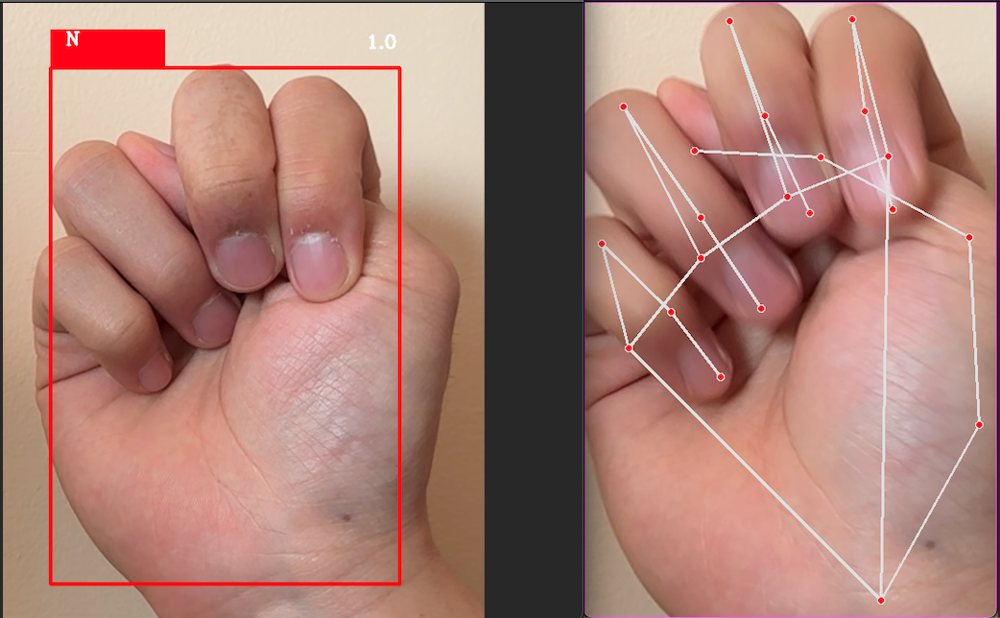

Development of an interpreter application which leverages computer vision to detect and track hand signs captured by a camera, while utilizing machine learning techniques to accurately classify the letter.
Overview
Clear and effective communication is a vital component of society. However, for individuals who rely on sign language, interacting with those who are unfamiliar with this mode of communication can be a difficult task. The development of a model capable of receiving a video stream from a camera and accurately classifying the signed letters can prove to be an invaluable tool. This technology can be utilized in various settings, including hospitals, schools, and government offices, to facilitate seamless communication and eliminate any potential communication barriers.
The problem of sign language alphabet recognition can be formulated as a machine learning problem. The objective is to create a system that can identify hand motions for every letter of the alphabet and correctly assign them to that letter. The intricacy and variety of sign language movements, as well as the requirement that the system be adaptable to changes in backdrop, lighting, and hand orientation, make this a difficult job. The creation of an effective method for deciphering sign language can greatly improve mobility and communication for the deaf and hard of hearing population, enabling them to interact with hearing people more effectively.
Technical Details:
Tech Stack: Python (Tensorflow, OpenCV, Mediapipe, Scikit-Learn, Pandas, NumPy)
- Data loading
- Exploratory data analysis
- Feature extraction and engineering (Data Augmentation, Histogram of Oriented Gradients)
- Dimensionality reduction (Principal Component Analysis, Linear Discriminant Analysis)
- Modeling with hyper-parameter tuning (including Naive Bayes, Logistic Regression, Random Forest, Support Vector Machines, XGBoost, Stacking Ensemble Classifier, and Convolutional Neural Networks)
- Evaluation
- Classification report (accuracy, precision, recall, f1-score, and support)
- Matthews correlation coefficient (MCC)
- Kohen Kappa Score
- OpenCV
- Mediapipe
Results
Please review the notebook for the methodology and explanations for identifying the best performing model: Python Notebook
Want to connect?
Connect with me through LinkedIn, or reach out to me via email or phone number.